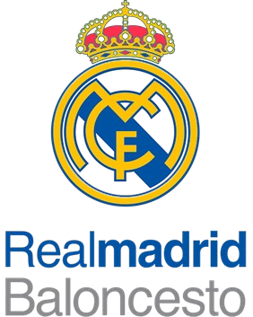

FAQ - Frequently Asked Questions ❓
Q: Where does Real Madrid play its home games?
A: Real Madrid plays its home games at the Santiago Bernabéu Stadium.
Q: When was Real Madrid founded?
A: The club was founded in 1902.
Q: What colors does Real Madrid wear?
A: The club traditionally wears an iconic all-white kit, which is why they are called Los Blancos.
Q: What is Real Madrid’s biggest rivalry?
A: Their biggest rival is FC Barcelona in the famous match called El Clásico.
Q: Who is Real Madrid’s all-time top scorer?
A: Cristiano Ronaldo holds the record with 450 goals for the club.
Q: Who was one of the most important presidents in the club’s history?
A: Santiago Bernabéu helped transform the club into a global powerhouse.
Q: What is Real Madrid famous for?
A: The club is known for its historic success, legendary players, and record Champions League victories.
Q: What does “Hala Madrid” mean?
A: It is a famous chant used by fans to support and encourage the team.
Q: Why is Real Madrid called “Los Blancos”?
A: Because the team’s traditional kit color is white.
